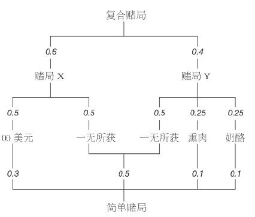
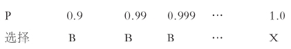
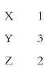
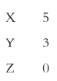
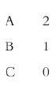
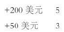
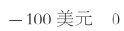
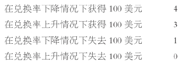
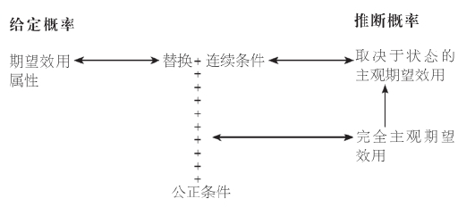

现在我来分析候选菜单由偶然性选项组成的情况，比如“如果红色出现，就得到100美元”或者“如果飞马赢得德比马赛，就得到鳄梨”。第一种情况的典型例子是轮盘赌，概率是给定的。第二种情况的典型例子是赛马，概率必须由推断获得。
一项结果的概率 是一个在0至1范围内的数字，表明该结果出现的可能性：概率越高，结果出现的可能性越大。极端情况下，概率为0意味着不可能，而概率为1则意味着确定。概率具有三项特性：（1）所有可能结果的概率相加等于1。因此，在轮盘赌中，如果一个有36道分槽的轮盘每道分槽出现的几率均等，则任意给定数字出现的概率为1/36。（2）如果两个结果不能同时出现，则两个结果中出现任意一个的概率等于两者各自出现概率之和。因此，7或12两个数字中出现任意一个的概率为2/36。不断使用这一特性可以推断出，出现任意一个偶数的概率为18/36，即0.5。（3）两个互相独立的结果连续出现的几率是两者各自出现概率的乘积。因此，连续出现两个偶数的概率为0.5×0.5，即0.25。
处于不确定状态的候选项称为赌局。一项概率赌局 指一系列可能得到的回报，其中每个回报都有各自的出现概率。显然，这些概率之和必须等于1。比如“以概率0.5得到100美元，以概率0.5一无所获”，或者用另外一种表述“以概率0.5得到100美元，其余情况则一无所获”。再举个例子：“以概率0.5一无所获，以概率0.25得到熏肉，其余情况则得到奶酪。”我们可以将这两个赌局（分别用X和Y表示）写成“100美元wp0.5，一无所获wp0.5”和“一无所获wp0.5，熏肉wp0.25，其余奶酪”，其中wp代表“出现概率为”。
你可以想象赌局的结果是由某个躲在幕后转动轮盘的人来决定的。如果你选择赌局X，可以设想为：出现偶数你得到100美元，出现奇数则一无所获。如果你选择了赌局Y，可以设想为：如果数字1至18中任意一个出现，你得到鳄梨 [5] ，如果数字19至27中任意一个出现，你得到熏肉，如果数字28至36中任意一个出现，你得到奶酪。
“得到鳄梨的概率为1”很显然也是个赌局，可能把这个赌局直接称为“鳄梨”更自然些。这种赌局被称为简化赌局 。同样，一个赌局中的回报也可以是其他赌局。例如在下面的赌局中，它的回报分别为赌局X和赌局Y：
赌局X wp0.6，赌局Y wp0.4
这个复合赌局 可以被看做是由权重分别为0.6和0.4的两个赌局X和Y所组成的混合赌局 。在这样的混合赌局中，回报由X和Y的所有回报组成，而与X相关的概率则是赌局X中的初始概率乘以0.6，与Y相关的概率则是赌局Y中的初始概率乘以0.4。因此，在上例中，作为赌局X的回报，获得100美元的概率为0.6×0.5，即0.3。而赌局X和Y都可能出现一无所获的情况，因此其概率为（0.6×0.5）＋（0.4×0.5），即0.5。这个复合赌局，或者说混合赌局，相当于以下简单赌局：
100美元wp0.3，一无所获wp0.5，熏肉wp0.1，奶酪wp0.1
如下图所示：

图6复合赌局
在预先设定这些条件之后，我们可以转向赌局中的选择。我们可以直接利用第二章的讨论：只需把菜单选项的名称从芦笋换成“以概率0.5得到100美元，其余情况则一无所获”，这样的转换不会改变第二章的任何结论。尽管如此，还存在其他影响因素。例如，如果你偏好100美元胜过一无所有，那么很自然，你偏好赌局“以概率0.9得到100美元，其余情况则一无所获”胜过“以概率0.1得到100美元，其余情况则一无所获”。但是，在第二章中所研究的理性的概念无法说明这一点：在理性的概念范围内，要求你对这两个赌局有所偏好，相当于仅仅因为你偏好鳄鱼肉胜过牛肉就要求你偏好鸡肉胜过鸭肉。
之所以可能有更多的影响因素，是因为在确定性条件下菜单选项没有内部结构：芦笋只是芦笋。而不确定性条件下的菜单选项则有某种内部结构：它们涉及回报和概率。这意味着在确定性条件下偏好序列就是问题的最终结果：它们无所谓理性或非理性。但我们有理由质疑在不确定性条件下的偏好序列是否是理性的。例如，我们可以考察那些回报相同但概率不同的赌局中所体现的偏好模式，比如上面提到的要么得到100美元，要么一无所获。
基于上述讨论，我将假定出自赌局的选择可以由偏好序列解释，并且来研究这一序列怎样才算是理性的。因为我将不会涉及无法排序（即不具备传递性）的偏好关系，从现在起我将把偏好序列简称为偏好 。
试考虑下面这个有问题的例子。
你喜欢茄子胜过花椰菜，但是你知道餐厅服务不太可靠，无论你点什么，都有0.1的概率得到菜花，于是你点了花椰菜：也就是说，你喜欢赌局“以概率0.9得到花椰菜，其他情况则得到菜花”胜过赌局“以概率0.9得到茄子，其他情况则得到菜花”。
本例中你的选择有问题：在第二种情况中结果C对于每个赌局来说都是一样的，但你却让它影响了你的决定。如果在比较两个赌局的时候，你忽略它们相同的方面而专注于不同点，这似乎显得更加自然。当然，你可能喜欢赌局“以0.9的概率得到B，以0.1的概率得到C”胜过赌局“以0.9的概率得到A，以0.1的概率得到C”，尽管你喜欢单选A胜过单选B（也许是因为C和B搭配比和A搭配要好）。但是，这两个选项都没有。你要么得到你点的，要么得到C。如果你得到你点的蔬菜，那么C无关紧要；如果你得到C，那么你点了什么菜就无关紧要。为了确保这样的无关情况不影响整个分析，我们可以要求：如果你喜欢第一个赌局胜过第二个，那么对于把这两个赌局分别和第三个赌局按同样权重进行组合得到的两个混合赌局，你喜欢第一个混合赌局胜过第二个。这一要求被称为替换条件 。
替换条件有个直接推论：如果你喜欢100美元胜过一无所有，那么你就会喜欢赌局“以概率0.9获得100美元，其余则一无所有”胜过“以概率0.1获得100美元，其余情况则一无所有”。更一般地，如果你喜欢一个赌局胜过另一个，那么当且仅当你更喜欢的那个赌局在第一个混合赌局中的比重大于它在第二个混合赌局中的比重时，你选择第一个混合赌局。
下面的例子里出现另一类问题。
你喜欢苹果胜过香蕉，喜欢香蕉胜过樱桃（既然你是理性的，当然喜欢苹果胜过樱桃）。但是，你喜欢香蕉胜过每个或得到苹果、或得到讨厌的樱桃的赌局，不管得到后者的概率有多低。
在本例中你的选择有问题：你的偏好出现跳跃。试考虑你对B和赌局X（以概率p得到A，其余情况得到C）的偏好。如果p小于1，不管它多接近1，你选择B；但当p等于1，也就是说当赌局X变成A，你选择X。因此在某一点上你从偏好某一项变成偏好另一项，却没有经过中间无差异的过渡阶段。如下表所示：

如果你的选择平稳变化而不是像这样突然跳跃，可能更容易接受。要明白在实践中这究竟意味着什么，让我们重新解释这三个选项，设A为一百万美元，B为一无所有，C为你的死亡。可以认为存在足够高的概率p，使得你愿意接受这样的赌局：以概率p获得一百万，否则就失去性命。如果这显得不太可能，那就问问你自己是否愿意穿过一条交通繁忙的街道，冒着极其微小的丧命概率，来挣得一百万。典型的答案是愿意。为了避免偏好的跳跃变化，我们要求：如果你喜欢第一个赌局胜过第二个，喜欢第二个胜过第三个，那么必然存在第一个和第三个赌局的某种混合，使得你认为它和第二个赌局无差异。这一要求被称为连续条件 ，又被称为阿基米德条件 ，得名于希腊数学家阿基米德（前287—前212）。
（补充说明：我们可能注意到连续条件要求允许概率以连续的方式变化，因为如果概率只以0.1的幅度发生变化，那么很可能出现你喜欢赌局“以概率0.9得到A，其余情况下得到C”胜过选项B，并且喜欢B胜过赌局“以概率0.8得到A，其余情况下得到C”。这一点又反过来要求有无穷多的赌局。）
我们应该再次来检查这两个条件是否一致且独立。为避免重复，我只考虑一致性；独立性可以直接看出来。下面的例子显示了一致性。
考虑由杏仁、巴西坚果和腰果组成的所有可能赌局，只要在第一个赌局中得到杏仁的概率的两倍加上得到巴西坚果的概率大于在第二个赌局中的相应数字，你就喜欢第一个赌局胜过第二个。
在本例中，只要2p+q大于2r+s，你就喜欢赌局“A wp p，B wp q，其余概率得到C”胜过赌局“A wp r，B wp s，其余概率得到C”。注意这个条件规定了你对于所有涉及A、B、C的赌局的偏好。很容易证明替换条件和连续条件都成立。
因为替换条件和连续条件是一致且独立的，并且看起来至少排除了我已经指出的问题，我会说如果你的偏好满足这两个条件，那么你对相关赌局具有理性偏好 。
要概括理性的特点，我们需要用到期望效用 的概念。回想一下，我们已经假定赌局中的选择可以由偏好序列来解释，也就是说，是效用最大化的（参见第二章的讨论）。那么既然我们可以给所有的赌局指派效用，我们当然可以给简化赌局（即回报）指派效用。假定我们已经这样做了。那么一个赌局的期望效用可以通过以下方式计算：将每个回报的效用乘以该回报出现的概率，再将所有结果相加。例如，你的效用指派方式如下：

那么赌局“X wp 0.2，Y wp 0.3，Z wp 0.5”的期望效用就是：（1×0.2）+（3×0.3）+（2×0.5），即2.1。
回想一下，我们有多种方式来指派效用：唯一的要求就是更好的回报具有更高效用。为给后面的讨论作个准备，请注意如果我们把所有效用翻倍，那么我们也把任何赌局的期望效用翻倍。如果我们把所有效用加上7，那么我们也把任何赌局的期望效用加上7。例如，如果我们把上例中的效用依次进行这两项变换，那么新的期望效用就是11.2，等于原来的期望效用乘以2，再加上7。但是，如果我们用所有效用的平方来代替它们，那么新的期望效用并非原来数字的平方：新的期望效用等于4.9，而原来的效用平方后等于4.41。
如果有某种效用指派方式，使得我们可以基于赌局的期望效用对它们作出判断，那么问题就会变得很方便。也就是说，当且仅当一个赌局相比另一个具有更高效用时，你更喜欢该赌局。这就意味着，你将喜欢上文提到的那个赌局胜过下面这个新的赌局：
X wp 0.5，Y wp 0.3，Z wp 0.2因为正如我们所说，原来那个赌局的期望效用（2.1），超过了新赌局的期望效用（1.8）。如果效用可以通过这种方式指派，那么由此得到的效用称为基数效用 ，或者又称为“伯努利效用”，得名于数学家丹尼尔·伯努利（1700—1782）。并且我们称偏好具有期望效用属性 。
如果我们可以指派基数效用，那么我们有多种指派方式。假设我们已经采用某种方式指派了基数效用，那么当且仅当赌局X在该效用指派方式下具有更高的期望效用时，赌局X比赌局Y要好。现在我们换种方式来指派效用，指派给每个回报的新的效用数值等于原来的效用乘以2再加7。正如我们已经看到的，这意味着任何一个赌局的新期望效用等于原来的数值乘以2再加7。此时，当且仅当X原来具有更高的期望效用时（也就是当且仅当X好于Y时），X具有更高的新期望效用。因此，当基数效用翻倍并加7时，它们的代表属性保持不变。更一般地，当基数效用以线性 方式变换时（也就是说，当它们乘以或除以任何正数，或者加上或减去任何数字），它们的代表属性保持不变。一个常见的线性变换的例子是测量温度的两种方式之间的变换：华氏温度等于摄氏温度乘以1.8再加上32。
然而，基数效用在进行非线性变换时，其代表属性将发生变化。因为对效用进行其他变化无法保证期望效用以同样方式变化。比如，如果效用指派如下：

那么你喜欢Y（也就是说，简化赌局让你以概率1得到Y）胜过另一个赌局（以概率0.5得到X，其余则得到Z）：两个赌局的期望效用分别为3和2.5。但如果这些效用被它们各自的平方数代替，那么新的期望效用分别为9和12.5。这两个数字说明你喜欢后一个赌局胜过Y，但这是错误的。
假设我们以下列方式指派基数效用：回报X得到效用v，而更好的回报Y则得到效用u；显然u一定大于v。如果我们从这两个效用中都减去v，再除以u-v（这应该是个正数），那么我们得到如下基数效用：Y的效用为1，而X的效用为0。这意味着如果我们可以指派基数效用，那么我们可以这样来进行：为某个回报指派效用0，为其他更好的回报指派效用1。
在坚果的例子里，期望效用属性成立。对任意两个赌局，只要在第一个赌局中得到A的概率乘以2再加上得到B的概率大于第二个赌局中的相应数字，你就喜欢第一个赌局胜过第二个。如果我们指派效用如下：

那么赌局“A wp p，B wp q，其余得到C”的期望效用为2p+q，而赌局“A wp r，B wp s，其余得到C”的期望效用为2r+s。那么，因为当且仅当2p+q大于2r+s时，你喜欢第一个赌局胜过第二个，所以当且仅当第一个赌局有更高的期望效用时，你喜欢第一个赌局胜过第二个。换句话说，你的偏好具有期望效用属性。
为了证明期望效用属性并非无关紧要，让我们回到蔬菜的例子。在这个例子中，你喜欢A胜过B，但是喜欢赌局X“以概率0.9得到B，其余情况则得到C”胜过赌局Y“以概率0.9得到A，其余情况得到C”。既然你喜欢A胜过B，我们可以指派A的效用为1，B的效用为0。把指派给C的效用记做u。那么X的期望效用为0.1u，而Y的期望效用为0.9+0.1u。因为你喜欢X胜过Y，所以期望效用属性将要求0.1u大于0.9+0.1u，这是不可能的。
在水果的例子里出现同样情况。你喜欢A胜过B，喜欢B胜过C，但是你喜欢B胜过任何可能给你A或C的赌局。既然你喜欢A胜过C，我们可以指派A的效用为1，C的效用为0。把B的效用记做u。那么，因为你喜欢B胜过赌局“以概率p得到A，其余情况得到C”，其中p小于1，所以期望效用属性要求固定值u（小于1）大于每个可能的p。同样，这是不可能的。
出现下列情况并非巧合：（1）期望效用属性在坚果例子中成立，但在蔬菜和水果例子中都不成立；（2）在蔬菜和水果例子中，替换条件和连续条件至少有一项不成立，但在坚果例子中，两个条件均满足。当两个条件均得到满足的时候（也就是说，当偏好是理性的时候），期望效用属性总是成立。于是我们可以得到一个完整的概述：当且仅当偏好具备期望效用属性时，对于（概率性）赌局的偏好是理性的。
如果把时间纳入考虑，情况就将发生变化。来考虑两个赌局：每一个赌局都会在一年后（从今天开始计算）给你一百万美元，条件是轮盘赌的结果是偶数，否则你就一无所获。但这两个赌局并非完全一致：在第一个赌局里，轮盘是在今天转动的，而在第二个赌局里，轮盘是在一年后转动的。不仅这两个赌局不一样，而且你也不会以同样的方式来加以考虑。典型情况下，你会偏好第一个赌局，因为对未来财富的了解可以帮助你在接下去的一年里更好地规划人生。如果知道自己将要发财，那么你可以动用储蓄，或者预先借钱，一年后从一百万里补上。但是，我们在此所讨论的静态理论无法区分这两个赌局，因此也无法在时间以这样的方式产生影响时，来指导选择。
即使在一个静态的框架里，也不是所有问题都能直接解答。试考虑一个明显的悖论，被称为“阿莱悖论”，得名于诺贝尔经济学奖获得者莫里斯·阿莱（生于1911年）。首先，你会喜欢简化赌局U“以概率1得到240美元”胜过赌局V“以概率0.33得到250美元，以概率0.66得到240美元，另有概率0.01一无所获”吗？其次，你会喜欢赌局X“以概率0.33得到250美元，以概率0.67一无所获”胜过赌局Y“以概率0.34获得240美元，以概率0.66一无所获”吗？
停下来想一想。如果你喜欢赌局U胜过V，那么你也应该喜欢Y胜过X。要弄明白为什么会这样，让我们把得到250美元的效用指派为1，把一无所获的效用指派为0，把指派给240美元的效用记作u。那么，如果你喜欢U胜过V，U的期望效用（即u）必须大于V的期望效用（0.33+0.66u）。这意味着0.34u必须大于0.33。既然0.34u是Y的期望效用，而0.33是X的期望效用，这也就意味着你的偏好具备期望效用属性，你喜欢Y胜过X。
但是，在一次试验中，相当多的人声称他们喜欢U胜过V，并且喜欢X胜过Y。这意味着这些人的偏好并不具备期望效用属性，或者说，不满足替换条件或者连续条件中的某一项（事实上是前者）。原因似乎在于人们对小概率的结果过分关注。（一定程度上这或许解释了为什么人们购买国家彩票。这些彩票提供巨额奖金，但赢取的几率极其微小。）对此你要自己作出决定，记住我在第一章里提过的对于悖论可能产生的种种反应。
基数效用在进行线性变换时保持其代表属性，但在非线性变换时却并非如此。这一事实暗示，效用的差异现在具有某种意义。如果当采用某种效用指派方式时，一对回报之间的效用差异大于另外一对之间的效用差异，那么在采用任何一种效用指派方式时，前一对效用差异总是大于后一对。由此看来，基数效用似乎可以为赞成财富再分配的观点提供支持。处理这个问题需要一个新的框架，其中所有的回报都是一定数额的金钱。相应地，我将把这部分的讨论留到下一章来进行。
到目前为止，概率都是已经给定的。要讨论概率未定的赌局，我们要用到“世界状态”的概念，或者简称为“状态”。状态 是对任何与你的选择相关并且你不能确定的因素的详细说明。在两匹马阿尔克夫和巴拉西亚进行比赛的情况下（假定至少有一匹马能完成比赛，并且不出现平局），状态可能是“阿尔克夫获胜”或“巴拉西亚获胜”。正如本例所显示的，状态必须以这样的方式加以说明，即有且仅有一个状态会发生。
图7阿尔克夫没有获胜：左二为阿尔克夫，骑在马背上的是本书作者
状态赌局 是一系列可能得到的回报，每个回报有其相应的出现状态。在上面的赛马例子中可能出现的情况是：“如果阿尔克夫获胜就赢得200美元，如果巴拉西亚获胜就输掉100美元。”我们可以把这个赌局写成：“如果A，+200美元；如果B，－100美元。”
如果阿尔克夫的赔率是2:1（下注1美元可以赢得2美元），我们可以把这个赌局称为“下注100美元赌阿尔克夫获胜”。如果巴拉西亚的赔率是1:2，那么赌局“下注100美元赌巴拉西亚获胜”就是：“如果A，－100美元；如果B，+50美元。”
状态赌局类似于具有多个回报的概率赌局，两者都包括一系列附带条件的回报：区别在于，在状态赌局中回报附带的是状态，而非概率。状态允许我们在概率没有给定时来考虑赌局的选择。这一点很重要。在几乎所有有趣的问题中，概率都是没有给定的：没人告诉你阿尔克夫获胜的概率，你的车被偷的概率，或者股市崩盘的概率。
当概率没有给定的时候，你怎么才能从多个赌局中作出明智选择？一个可行的建议是：（1）你为状态指派主观概率；（2）然后为回报指派效用；（3）然后在给定这些概率的情况下，选择带给你最高主观期望效用的赌局。为了说明这一过程，让我们回到赛马的例子，考虑一下如何在赌局“下注100美元赌阿尔克夫获胜”和赌局“下注100美元赌巴拉西亚获胜”之间进行选择。首先你为状态指派概率：设阿尔克夫获胜的概率为0.4，巴拉西亚获胜的概率为0.6。然后你为回报指派效用。三个可能获得的回报如下：
+200美元（对A下注，且A获胜）+50美元（对B下注，且B获胜）－100美元（下注的马输了）
你对这三个回报指派效用如下：


最后，你计算每个赌局在给定概率下的期望效用：如果对阿尔克夫下注，期望效用为2；如果对巴拉西亚下注，期望效用为1.8。因为对阿尔克夫下注所获得的主观期望效用大于对巴拉西亚下注时所获得的主观期望效用，你该对阿尔克夫下注。如果这样做，你对赌局的偏好就具有主观期望效用属性 。你所指派的效用当然是基数的，且可以进行任何线性变换，但不能进行非线性变换。
下面来介绍一些不同的方法，我将在赛马的情景中进行逆推：我将从假定具备主观期望效用属性开始，然后来看哪些条件支持这一假定。并且，因为论述过程和概率给定的情况很相似，我将不再像当时那样展开详细论述。
基本想法很简单：通过观察选择模式，你能够推测其中的效用和概率。如果选择赌局“如果出太阳就得到鳄梨，否则就得到奶酪”，而不是赌局“如果出太阳就得到熏肉，否则就得到香肠”，这说明你喜欢鳄梨胜过熏肉，因此给鳄梨指派更高的效用。如果你同时还选择赌局“如果出太阳就得到鳄梨，否则就得到熏肉”，而不是赌局“如果下雨就得到鳄梨，否则就得到熏肉”，这说明你觉得出太阳比下雨更有可能，因此给出太阳的情况指派更高的概率。通过足够多的类似的脑力试验，你能够为所有的回报指派效用，为所有的状态指派概率。这样做了之后，你在行动时就会很自然地把这些概率和效用当做已经给定的信息，你的选择也将以取得最大期望效用为目的。
如果你的偏好具有主观期望效用属性，那么你的品位（由效用所代表）和你的信仰（由概率所代表）都是主观的。同样，你的品位和信仰是独立的：你不会因为某事更有可能发生才更看重它，也不会因为更看重某事才觉得它更可能发生。而且，你指派给某个回报的效用并不取决于你得到它时的状态：不管阿尔克夫胜或败，200美元对你来说都是一样的。最后一个要求很严苛。它可能在赛马的例子中成立，但在其他情形下则不成立。
比如，让我们试着考虑欧元的兑换率（以欧元兑美元的价格来表示）。简单起见，我将假定只有两种可能状态：兑换率上升和兑换率下降。你有两种可能的赌局：买入欧元，卖出欧元。如果买入，且兑换率上升，你获得100美元；但如果兑换率下降，你损失100美元。如果卖出，且兑换率上升，你损失100美元；但如果兑换率下降，你获得100美元。问题之所以复杂，是因为当兑换率上升时获得的100美元不同于兑换率下降时获得的100美元：在第一种情况下你要购买的进口货物的成本大于在第二种情况下的成本。更一般地，你指派给某个回报的效用取决于你得到该回报时的状态。
如果像本例这样，我们觉得主观期望效用属性过于苛求，我们可以降低要求，允许效用取决于状态。例如，你不再是给失去100美元的情况指派效用0，给获得100美元的情况指派效用1，而是可以指派效用如下：

将这些效用乘以相应的概率并将结果相加就得到一个赌局的取决于状态的主观期望效用 。如果你选择了具有最高的取决于状态的主观期望效用的赌局，那么就可以说你的偏好具有取决于状态的主观期望效用属性。
显然，相比（完全的）主观期望效用属性，这是一种较弱的属性。
要看清什么样的条件可以支持（完全的或者取决于状态的）主观期望效用属性，我们必须允许状态赌局的回报本身就是赌局，正如我们允许概率赌局的回报是赌局一样。然后我们可以用类似于解释混合概率赌局的方式来解释混合状态赌局。这样做反过来又允许我们将替换条件和连续条件应用到状态赌局：回想一下，这两个条件都可以只用混合赌局来表示，而不涉及概率。
一旦我们这样做了之后，我们就可以直接来描述取决于状态的主观期望效用属性：当且仅当偏好满足替换条件和连续条件时（当它们应用于状态赌局时），偏好具备这一属性。
然而，替换条件和连续条件并不保证偏好具备完全的主观期望效用属性。这需要一个新的条件：如果你在某种状态下喜欢一个赌局胜过另一个，那么你应该在所有状态下，都保持这一偏好。这一条件被称为公正条件 ，相比我们已经遇到的其他条件，公正条件更为严格。假设两种状态分别是下雨和出太阳，一个（简约）赌局确定提供一把雨伞，另一个赌局则确定提供一瓶水。那么你可能会违背公正条件，在下雨状态下更喜欢雨伞，而在出太阳状态下更喜欢水。
尽管较为严格，公正条件和其他两个条件一起提供了我们所寻求的描述：当且仅当偏好满足替换条件、连续条件（当它们应用于状态赌局时）以及公正条件时，偏好具备完全的主观期望效用属性。

图8不确定条件下的选择示意图：加号代表结合，双箭头代表相等，单箭头代表隐含
本章所论述的各个概念之间的联系如图8所示。
在状态赌局的背景下有一个和“阿莱悖论”类似的问题叫“埃尔斯伯格悖论”。一个瓮里装着红、白、蓝三色彩球，要从中随机抽出一个。已知三分之一的球是红色的，但是白色球的比例（或者蓝色球的比例）是未知的。首先，你是否喜欢赌局U“如果抽到红色球就得到100美元，否则一无所获”胜过赌局V“如果抽到白色球就得到100美元，否则一无所获”？其次，你是否喜欢赌局X“如果抽到白色球或蓝色球就获得100美元，否则一无所获”胜过赌局Y“如果抽到红色球或蓝色球就得到100美元，否则一无所获”？
停下来想一想。如果你喜欢赌局U胜过V，那么应该同样喜欢Y胜过X。要明白为什么会这样，让我们为100美元指派效用1，为一无所获指派效用0，然后把指派给抽中红球、白球和蓝球的概率分别记做p、q和r（注意这几个主观概率都不一定等于1/3）。现在如果你喜欢U胜过V，那么U的期望效用，也就是p，一定要大于V的期望效用，也就是q。这暗示p+r一定大于q+r。因为p+r是Y的期望效用，而q+r是X的期望效用，所以这反过来意味着，如果你的偏好具备期望效用属性，你喜欢Y胜过X。
但是，在试验中，相当大比例的人声称他们喜欢U胜过V，同时喜欢X胜过Y。这意味着这些人的偏好不具备取决于状态的主观期望效用，或者说，不满足替换条件或连续条件（事实上，是前者）。出现这一现象，看起来原因在于人们偏好概率给定胜过自己去推断概率。对此，你还是应该有你自己的判断。
阿莱悖论涉及概率赌局，而埃尔斯伯格悖论则涉及状态赌局。另外还有第三种悖论，称为“纽科姆悖论”，因哲学家罗伯特·诺齐克（1938—2002）的提问而广为人知，它涉及在不确定性条件下的一般选择。假设你面前有两个箱子，一个打开，另一个关闭。你必须同时选择两者或者只是关上的那个箱子。在打开的箱子里你看到有100美元；并且你被告知存在某个超能生物，它总能正确预测未来。如果它预测到你只选那个关闭的箱子，它就会在里面放入100万美元；否则它就什么也不放。你会选择要两个箱子，还是只选关上的那个？
诺齐克向很多人提了这个问题，他发现“几乎每个人都很清楚该做些什么。困难在于这些人意见明显存在分歧，分成人数大致相当的两半，且很多人认为另一半的人极其愚蠢”。看起来任何只选关闭的箱子的人确实是愚蠢的：那个超级生物可能已经放了或者没有放入100万美元，所以你完全可以同时选择两个箱子（正如诺齐克自己在长篇累牍的分析之后将会做的那样）。但是，你应该作出你自己的回答。［在你准备回答的时候，不妨想想诺贝尔物理学奖得主尼尔斯·波尔（1885—1962）。当他被问到为什么在墙上挂了一块幸运马蹄铁时，据说他这样回答：“并不是因为我相信它；而是有人告诉我，不管人们是否相信，它都能起作用。”］
不确定性条件下的选择涉及从赌局中作出选择，包括概率给定和未定两种情况。
替换条件要求，如果你喜欢第一个赌局胜过第二个，那么对于这两个赌局分别以相同权重和第三个赌局组成的混合赌局，你喜欢第一个混合赌局胜过第二个。
连续条件要求，如果你喜欢第一个赌局胜过第二个，且喜欢第二个胜过第三个，那么必定存在由第一个赌局和第三个赌局组成的某个混合赌局，使得你认为它和第二个赌局无差异。
概率赌局的期望效用由以下方式计算获得：把每个回报乘以相应的概率，再把结果相加。如果你在当且仅当某个赌局具有更高期望效用时，喜欢该赌局胜过另一个，那么你对于概率赌局的偏好就具备期望效用属性。
当且仅当偏好具备期望效用属性的时候，你对于概率赌局的偏好是理性的，也就是说，满足替换条件和连续条件。
一个赌局的取决于状态的主观期望效用由以下方式计算获得：将各个状态下所获得的回报分别乘以与该状态相联系的概率，再把结果相加。如果当且仅当某个赌局具有更高的期望效用时，你喜欢该赌局胜过另一个，那么你对于状态赌局的偏好就具备取决于状态的主观期望效用属性。如果当且仅当某个赌局具有更高的期望效用时，你喜欢该赌局胜过另一个，且指派给回报的效用独立于获得该回报的状态，那么你的偏好就具备（完全的）主观期望效用。
公正条件要求，如果你在某个状态下喜欢某个赌局胜过另一个，那么你在所有状态下都偏好该赌局。
当且仅当偏好满足替换条件和连续条件（当应用于状态赌局时），偏好具备取决于状态的主观期望效用属性；当且仅当偏好在满足替换条件和连续条件的同时还满足公正条件时，偏好具备完全主观期望效用属性。